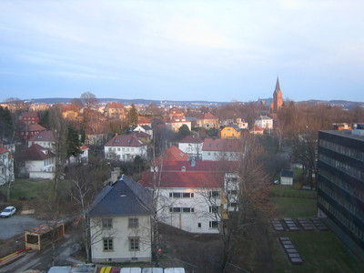

Hirokazu Nasu
I am a postdoctoral researcher in
the department of mathematics
at the University of Oslo
in Norway.
I am currently a
JSPS-FY2008 fellowship holder (long-term) and
am working on my research project with a help of
Prof. Kristian Ranestad
and Prof. Jan Oddvar Kleppe.
- Postal Address: Department of Mathematics, University of Oslo
PB 1053 Blindern, 0316 Oslo, Norway
- Visiting Address: Room 614
Niels Henrik Abels building, Blindern
- Tel: +47 22 85 72 17 (Office)
- Email: nasu accompanied by @kurims.kyoto-u.ac.jp
Education
I completed my Ph.D. at the
RIMS,
Kyoto University in 2005 under the supervision of
Prof. Shigeru Mukai.
Before coming to Kyoto,
I spent four years as a graduate student
at the
Graduate School of Mathematics in the
Nagoya University.
Publications
Preprints
-
Obstructions to deforming curves on a 3-fold, II:
Deformations of degenerate curves on a del Pezzo 3-fold, submitted,
math.AG/0609286.
Some of my articles written in Japanese are
here.
Links
Revised at Wed Aug 20 21:58:38 CEST 2008